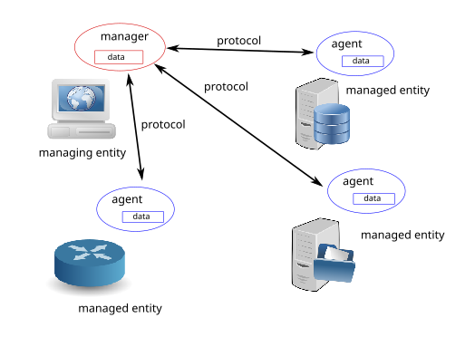
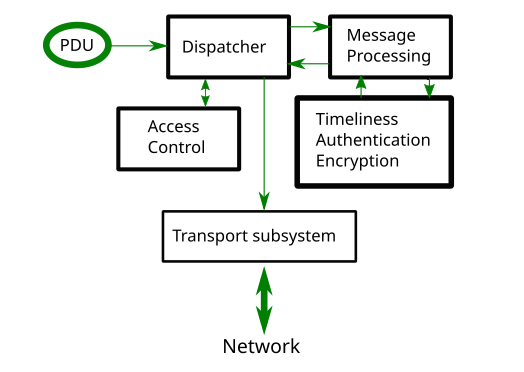
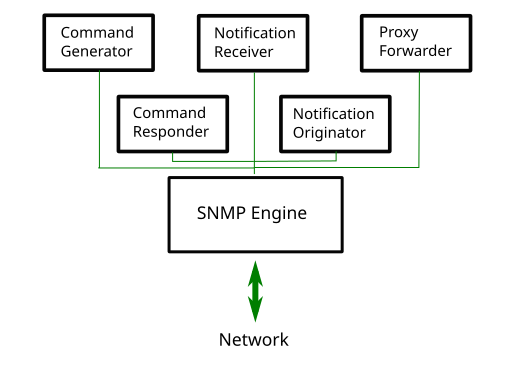

SNMP design¶
Contrary to what the name might suggest, SNMP is much more than just a protocol for moving management data. Over time it has grown to be more complex than its initial designers probably planned it.
Terminology and entities¶
The network management field has its own specific terminology for various components of a network management architecture, and so we adopt that terminology here. The peculiarity of this terminology is that the word “management” is greatly overused. So bare with it.
There are three principle components of a network management architecture: a managing entity, the managed entity, and a network management protocol.

The managing entity is an application running in a centralized network management station (NMS). It is the managing entity that controls the collection, processing, analysis, and/or display of network management information. It is here that actions are initiated to control network behavior and here that the human network administrator interacts with the network devices.
A managed entity is typically hardware or software application that resides on a managed network. It enumerates and formalizes some of its properties and states, important for healthy operation, thus making them available to the managing entity. For example, a managed entity could be a host, router, switch, printer, or any other device.
The third piece of a network management system is the network management protocol. The protocol runs between the managing entity and the managed entity, allowing the managing entity to query the status of managed entity and make the latter carrying out actions via its agents.
Structure and components¶
SNMP consists of four parts:
Definitions of network management objects known as MIB objects. Management information is represented as a collection of managed objects that together form a virtual information store, known as the Management Information Base (MIB). A MIB object might be a counter, descriptive information such as software version; status information such as whether or not a device is healthy, or protocol-specific information such as a routing path to a destination. MIB objects thus define the management information maintained by a managed node. Related MIB objects are gathered into so-called MIB modules.
Data definition language, called SMI (Structure of Management Information) that introduces base data types, allows for creating their subtypes and more complex data structures. MIB objects are expressed in this data definition language.
Protocol (SNMP) for conveying information and commands between a managing and managed entities. SNMP is designed around a client-server model. What’s interesting that both managing and managed entities contain client and server components.
Extensible security framework and system administration capabilities.
The latter features were completely absent in SNMP versions prior to SNMPv3.
Data types¶
SMI introduces eleven base data types used for representing managed objects states. They are either pure ASN.1 types or their specializations. Pure ASN.1 types:
INTEGER
OCTET STRING
OBJECT IDENTIFIER
ASN.1 is a really aged and quite complex set of standards that deals with structuring and serializing data in a portable way.
SNMP-specific subtypes of those base ASN.1 types are:
Integer32/Unsigned32 - 32-bit integer
Counter32/Counter64 - ever increasing number
Gauge32 - positive, non-wrapping 31-bit integer
TimeTicks - time since some event
IPaddress - IPv4 address
Opaque - uninterpreted ASN.1 string
In addition to these scalar types, SNMP defines a way to collect them into ordered arrays. From these arrays 2-d tables could be built.
PySNMP relies on the PyASN1 package for modeling all SNMP types. With PyASN1, instances of ASN.1 types are represented by Python objects that look like either a string or an integer.
We can convert PyASN1 objects into Python types and back. PyASN1 objects can participate in basic arithmetic operations (numbers) or in operations with strings (concatenation, subscription etc). All SNMP base types are immutable like their Python counterparts.
>>> from pyasn1.type.univ import *
>>> Integer(21) * 2
Integer(42)
>>> Integer(-1) + Integer(1)
Integer(0)
>>> int(Integer(42))
42
>>> OctetString('Hello') + ', ' +
>>> OctetString(hexValue='5079534e4d5021')
OctetString('Hello, PySNMP!')
Users of PySNMP library may encounter PyASN1 classes and objects when passing data to or receiving data from PySNMP.
The one data type we will discuss in more detail shortly is the OBJECT IDENTIFIER data type, which is used to name an object. With this system, objects are identified in a hierarchical manner.
Object Identifier¶
OIDs are widly used in computing for identifying objects. This system can be depicted as a tree whose nodes are assigned by different organizations, knowledge domains, types of concepts or objects, concrete instances of objects. From human perspective, an OID is a long sequence of numbers, coding the nodes, separated by dots.
Each ‘branch’ of this tree has a number and a name, and the complete path from the top of the tree down to the point of interest forms the name of that point. This complete path is the OID, the “identifier of an object” respectively. Nodes near the top of the tree are of an extremely general nature.
Top level MIB object IDs (OIDs) belong to different standard organizations. Vendors define private branches including managed objects for their own products.
At the top of the hierarchy are the International Organization for Standardization (ISO) and the Telecommunication Standardization Sector of the International Telecommunication Union (ITU-T), the two main standards organizations dealing with ASN.1, as well as a brach for joint efforts by these two organizations.
In PyASN1 model, OID looks like an immutable sequence of numbers. Like it is with Python tuples, PyASN1 OID objects can be concatinated or split apart. Subscription operation returns a numeric sub-OID.
>>> from pyasn1.type.univ import *
>>> internetId = ObjectIdentifier((1, 3, 6, 1))
>>> internetId
ObjectIdentifier('1.3.6.1')
>>> internetId[2]
6
>>> [ x for x in internetId ]
[1, 3, 6, 1]
>>> internetId + (2,)
ObjectIdentifier('1.3.6.1.2')
>>> internetId[1:3]
ObjectIdentifier('3.6')
>>> internetId[1]
>>> = 2
...
TypeError: object does not support item assignment
Collections of objects¶
Management Information Base (MIB) can be thought of as a formal description of a collection of relevant managed objects whose values collectively reflect the current “state” of some subsystem at a managed entity. These values may be queried, modified by or reported to a managing entity by sending SNMP messages to the agent that is executing in a managed node.
For example, the typical objects to monitor on a printer are the different cartridge states and maybe the number of printed files, and on a switch the typical objects of interest are the incoming and outgoing traffic as well as the rate of package loss or the number of packets addressed to a broadcast address.
Every managed device keeps a database of values for each of the definitions written in the MIB. So, the available data is actually not dependent on the database, but on the implementation. It is important to realize that MIB files never contain data, they are functionally similar to database schemas rather than data stores.
To organize MIB modules and objects properly, all the manageable features of all products (from each vendor) are arranged in this MIB tree structure. Each MIB module and object is uniquely identified by an Object Identifier.
Both SNMP managed and managing entities could consume MIB information.
Managing entity
Looks up OID by MIB object name
Casts value to proper type of MIB object
Humans read comments left by other humans
Managed entity
Implements MIB objects in code
From human perspective, MIB is a text file written in a subset of ASN.1 language. We maintain a distribution of over 5,000 MIB modules that you can use for your projects.
PySNMP converts ASN.1 MIB files into Python modules, then SNMP engine loads those modules at runtime on demand. PySNMP MIB modules are universal – the same module can be consumed by both managed and managing entities.
MIB conversion is performed automatically by PySNMP, but technically, it is handled by PySNMP sister project called PySMI. However you can also perform said conversion by hand with PySMI’s mibdump.py tool.
Protocol operations¶
SNMP is designed around a client-server model. Both managing and managed entities contain client and server components. Clients and servers exchange data in a name-value form. Values are strongly typed.
Central to protocol entity is SNMP engine that coordinates workings of all SNMP components.

Two modes of protocol operation are defined:
Request-response messages
Unsolicited messages
Protocol carries SNMP messages. Besides header information used for protocol operations, management information is transferred in so-called Protocol Data Units (PDU). Seven PDU types are defined in SNMP addressing conceptually different operations to be performed by either managing or managed entities (Manager or Agent repectively).
Manager-to-agent
GetRequest, SetRequest, GetNextRequest, GetBulkRequest, InformRequest
Manager-to-manager
InformRequest, Response
Agent-to-manager
SNMPv2-Trap, Response
Core applications¶
The standard (RFC 3413) identifies a few “standard” SNMP applications that are associated with either managing or managed entities.

PySNMP implements all these standard applications (via Native SNMP API) carefully following RFCs and their abstract service interfaces. The backside of this approach is that it’s way too detailed and verbose for most SNMP tasks. To make SNMP easy to use, PySNMP introduces High-level SNMP API.